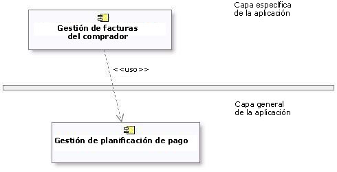
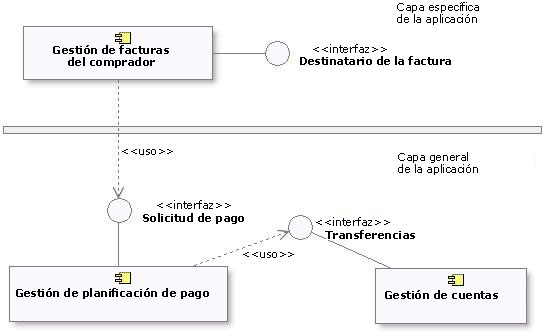

|
Objetivo
|
Documentar las interfaces de las que depende el subsistema.
|
Cuando un elemento contenido en un subsistema utiliza el comportamiento de un elemento contenido en otro subsistema, se
crea una dependencia entre los subsistemas contenedores. Para aumentar la reutilización y reducir las dependencias de
mantenimiento, deseamos expresar esta relación en términos de dependencia de una determinada Interfaz del subsistema, no del propio subsistema ni del elemento
contenido en el subsistema.
Existen dos motivos para ello:
-
Deseamos poder sustituir un elemento de modelo (incluidos los subsistemas) por otro, siempre que ofrezcan el mismo
comportamiento. Se especifica el comportamiento necesario en términos de interfaces, para que los requisitos de
comportamiento que un elemento de modelo tiene en otro se puedan expresar en términos de interfaces.
-
Deseamos que el diseñador tenga una total libertad para diseñar el comportamiento interno del subsistema,
siempre que proporcione el comportamiento externo correcto. Si un elemento de modelo en un subsistema hace
referencia a un elemento de modelo en otro subsistema, el diseñador ya no tendrá libertad para eliminar ese
elemento de modelo o redistribuir el comportamiento de ese elemento de modelo a otros elementos. Como resultado, el
sistema es más frágil.
Cuando cree dependencias, asegúrese de que no existan dependencias o asociaciones directas entre los elementos de
modelo contenidos por el subsistema y los elementos de modelo contenidos por otros subsistemas. Asimismo, asegúrese de
que no existan dependencias circulares entre los subsistemas y las interfaces; un subsistema no puede realizar una
interfaz y ser dependiente de ella al mismo tiempo.
Las dependencias entre subsistemas, y entre subsistemas y paquetes, se pueden extraer directamente tal como se muestra
a continuación. Cuando se muestra de esta forma, la dependencia indica que un subsistema (Gestión de facturas, por
ejemplo) depende directamente de otro subsistema (Gestión de planificación de pagos).

Ejemplo de capas de subsistema utilizando dependencias directas
Cuando existe la posibilidad de sustitución de un subsistema por otro (donde ambos tienen las mismas interfaces), la
dependencia se puede extraer a una Interfaz realizada por el subsistema, en lugar de al propio
subsistema. Esto permite utilizar cualquier otro elemento de modelo (subsistema o clase) que realice la misma interfaz.
La utilización de dependencias de interfaz permite diseñar infraestructuras flexibles utilizando elementos de diseño
reemplazables.

Ejemplo de capas de subsistema utilizando dependencias indirectas
|